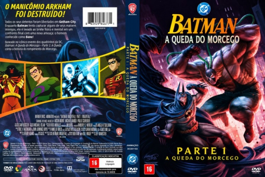

![link to Batman: A Queda do Morcego - Parte 1 [Autorado] on TheMovieDb](../img/themoviedb.png)

Outro Título:Batman: Knightfall Part 1: Knightfall
País:United States, 79 minutos
Idiomas falados:Inglês, Português
Gênero(s):Animação, Ação, Aventura, Drama
Diretor(s):Jeff Wamester
Escritor(es):Jeremy Adams
Codec:MPEG-2 (DVD)
Número: 5980


Certificado:
Sinopse:
O Asilo Arkham foi destruído, e todos os seus detentos foram soltos em Gotham City. Enquanto corre contra o tempo para capturar alguns de seus maiores inimigos, Batman é levado ao limite de suas capacidades físicas e mentais, rumo a um confronto final contra uma nova ameaça: o homem chamado Bane!
Elenco:

Tipo de mídia: DVD5,
Legendas: Português, Sem Legendas
Alugado: Não
Tela: Anamorphic Widescreen